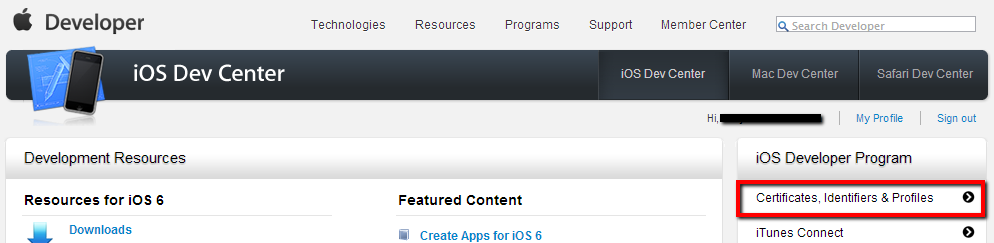

HowTo: Creating a Provisioning Profile for iOS Development
A Provisioning Profile is a collection of assets which link a group of developers, a group of devices and one or more applications. Their purpose is to enable those devices to be used for testing the application while it is being developed. A single Provisioning Profile can be defined for more than one application using wildcards (*) in the bundle identifier definition. When working with the Apple Push Notifications Service, Provisioning Profiles have to be defined for only one bundle identifier (the one associated to the APNS SSL Certificate) which means that the use of wildcards is not allowed. The steps needed to create and install the Provisioning Profile are as follows: 1. First, we need to go to the iOS Dev Center and login with a team agent or team admin account. 2. Go to Certificates, Identifiers & Profiles option and opn the Provisioning Profiles section.  3. Select the "New Profile" option and enter the required data: Type of the provisioning profile The App ID previously created. List of authorized developers (Certificates) List of devices authorized for testing the application Name for the profile 4. Click "Generate" and the new Provisioning Profile will be created and listed in the iOS Provisioning Portal. Note: Right after being created, the profile status is "In Process". Refresh the page after a few seconds until the status is "Active". 5. Now we need to download the new Provisioning Profile and install it in the Xcode library in the MAC computer which will be used to build the application. For this purpose, after the download, open the Profile file (mobileprovision file) using Xcode. 6. Check in Xcode that the new Provisioning Profile is installed in the Xcode Library (XCode->Preferences->Accounts->Account Details) 7. Check that it is a valid development profile by opening the file with a text editor (the file is in XML structure) and in the <Entitlements> element, check for the <aps-environment> that the string value is <development>
|

| Backlinks | |
| HowTo: Configuring Push Notifications in iOS Applications | Prototyping in iOS with a compiled application |